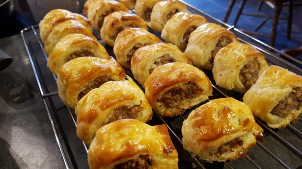

Sausage roll

Description
This classic homemade sausage roll is perfect for a family picnic, or dinner with a side of chips!
Ingredients
- Sausage
- Egg
- Ready made puff pastry
- Salt and black pepper
Steps
- Heat olive oil in a large pan and brown the ground beef with onions and garlic.
- Stir in the crushed tomatoes, tomato paste, oregano, salt, and pepper, then simmer for 20 minutes.
- Mix the ricotta cheese with the beaten egg and a handful of Parmesan in a medium bowl.
- Spread a thin layer of meat sauce on the bottom of a baking dish.
- Place a layer of pasta sheets over the sauce, followed by a layer of the ricotta mixture and a sprinkle of mozzarella.
- Repeat the layers of sauce, pasta, and cheese until the dish is full, finishing with a thick layer of mozzarella on top.
- Cover with foil and bake at 190°C (375°F) for 25 minutes, then remove the foil and bake for another 15 minutes until bubbly.
- Rest for 15 minutes before slicing and serving.
Home